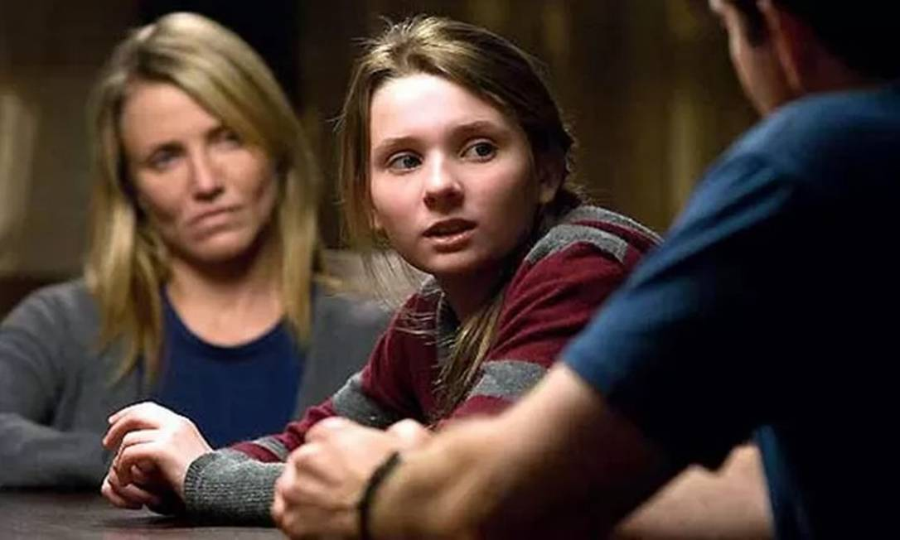
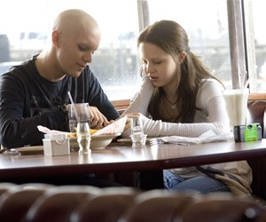
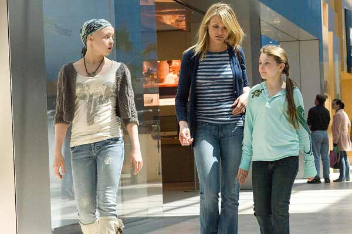

O filme "Uma Prova de Amor" é sobre a história de uma menina chamada Kate que tem leucemia e tem pouco tempo de vida e para tentar salvar ela, seus pais tomam uma decisão de gerar um filho de proveta (Bebê de proveta é uma criança proveniente de uma inseminação artificial) que seja um doador compatível com Kate. E nesse processo nasce Anna que passou por vários procedimentos médicos para salvar a irmã, quando Anna fez 11 anos ela precisou doar um rim para Kate. Anna após fazer tantas cirurgias para salvar a irmã está cansada de passar por tanto procedimentos doloridos e que vai tem que passar o resto da vida se cuidando, mas ela não concorda com isso e decide enfrentar os pais no tribunal por emancipação médica.
Na opinião do grupo: Sara, mãe de Kate, passa boa parte do filme só pensando em sua filha que está doente e não em Anna, que precisa fazer doações de partes essenciais de seu próprio corpo para salvar sua irmã mais velha. Podemos perceber que Sara estava desesperada para salvar a sua filha, tanto que esqueceu do seu marido, sua filha mais nova e sou outro filho que era disléxico, eram importantes também e achou que Anna não queria doar seu rim para sua irmã, Anna por sua vez, se sente excluída por não ter a sua opinião ouvida pelo seus pais, pois ela também era importante naquela familia e queria que seus pais percebessem isso, então Anna procurou seus direitos e for ao tribunal contra sua mãe. E no final a verdade era que a Kate queria desistir da luta contra sua doença.
   >